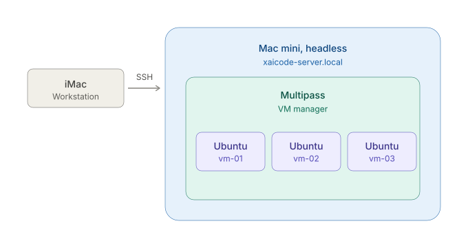

I ran technical projects and distributed engineering teams before deciding I wanted to build the infrastructure instead of scheduling it. Now I am finishing a cloud and network engineering degree on the AWS track, running my own Linux lab, and putting the work in public as I go. Looking for a first cloud operations or infrastructure role.
A Mac mini running headless as a virtualization host, with Ubuntu instances I provision through Multipass. Administered entirely over SSH, so nothing resets when I close the tab.
I came to infrastructure sideways. I started as a web designer, ended up running a small agency, and spent most of a decade as the person responsible for whether a distributed engineering team actually shipped. I have managed thirteen developers across time zones, run an operations program that cut a 90-day cycle by a third, and migrated a client's entire storefront from one platform to another without losing a day of sales.
The parts I liked best were never the schedule. They were the environments, the deploys, and the things that were slow because nobody had automated them yet.
So I went back for it. I am finishing a B.S. in Cloud and Network Engineering on the AWS track and running a lab at home to make the coursework stick. Every project on this page is something I set up, took apart, and set up again to understand what I got wrong the first time.
I am looking for a junior cloud operations, infrastructure, or platform role where I can learn from people who have run production systems. I am bilingual in English and Spanish, comfortable being the person who asks the obvious question, and I write things down. If your team has a backlog of small automation nobody has had time for, that is the work I want.
The environment I study and build in, written up the way I’d want to read it: what the problem was, what I put in place, and what I got wrong first.

A Mac mini running headless as a virtualization host, with Ubuntu instances I provision through Multipass. Administered entirely over SSH, so nothing resets when I close the tab.
A Mac mini running headless as a virtualization host, with Ubuntu instances I provision through Multipass. Administered entirely over SSH, so nothing resets when I close the tab.
I'm working through the LPI Linux Essentials material, and the browser labs it ships with expire after 30 minutes. Everything I did was gone when the timer ran out. Fine for a single exercise, useless for anything I wanted to build on. I wanted an environment that stuck around, and one I could break on purpose without losing my work.
A Mac mini running headless as a virtualization host, with Ubuntu instances I provision through Multipass. I administer all of it over SSH from my iMac. No monitor on the host, no desktop on the guests.
Most of the coursework has been command line: finding my way around the filesystem, archiving and compression with tar, shell scripting. Having a machine that keeps its state changed how I study. I can leave something half-configured, come back to it later, and pick up where I stopped. And when I break something badly enough that fixing it isn't worth the time, I delete the instance and launch a new one.
Finishing the shell scripting section, then moving my development work onto this machine and using it as the environment I actually build in, with deployment running from GitHub out to AWS.
Short write-ups of things I got wrong the first time. Mostly for me, published in case they save someone else an afternoon.
I turned on caching at three layers of a WordPress stack without understanding what any of them stored. A dashboard started serving one user's information to the next. The fix took a day. Finding the words to search for took longer.
A client escalated an issue on a site I built. The dashboard was caching logged-in information, which resulted in an exposure event.
I was maybe one to two years into working solo at that point. A one-person development agency.
I had been taught to enable caching to speed up load times, and to me, caching just meant the website was gonna be faster. So I applied it everywhere I could find a toggle. Hummingbird from WPMU DEV at the plugin layer. Server caching on Cloudways. Cloudflare on top of that. Three layers, none of them coordinated, all of them on. Every blog I read treated caching like a vitamin. More is better; take it daily.
Those blogs were high-level. Anything detailed enough to actually be useful, I didn't have the patience to sit down and understand.
What none of them made clear is that a cache stores whatever was rendered for a given URL and serves that same stored copy to everyone who requests it until the timer runs out. On a marketing page, that is the whole point. On an endpoint that renders differently depending on who is logged in, whatever was generated for the first visitor gets handed to everyone who loads that page after them.
With Cloudflare, that's scoped by region too, so it depends on which edge location you hit. And because the plugin and the server were both caching the same requests on their own timers, the layers were fighting each other. Which copy you got came down to timing.
I didn't know how to code. I had foundational CSS and HTML. I just don't know PHP or JavaScript. So when this broke, I did the only thing I knew how to do: Google it.
I was literally googling "my caching has logged user information on a dashboard, and other people can see it."
That popped up all sorts of things. I went down all these rabbit holes.
The search wasn't wrong. It described the symptom accurately. It just wasn't useful, because a symptom description finds other people who are equally lost. It doesn't find the fix.
The two words I needed were cache exclusion. I didn't know they existed. Once you have them, the search takes thirty seconds. Without them, you can burn a day. Or three.
That was the hard part of troubleshooting back then. How you wrote the query depended on your ability to understand the issue in the first place. You needed the right keywords and terminology, and getting the terminology usually meant you already had some idea what was wrong.
The search was the reward for having diagnosed it. It was never the diagnosis.
Through all that research, I found out there was an entire world to caching that I had no idea about. Developers spend real time configuring it. It shouldn't be applied aimlessly. Documentation was sparse.
Then came the part that took the longest. It wasn't enough to set an exclusion in one place if the next layer ignored it and served its own cached copy. I had to work through all three separately.
The plugin also had me paste rules into .htaccess, which Apache reads before PHP even loads. So a request could be served from a cached file on disk without WordPress ever running. That was one more place the exclusion had to be right.
What I ended up doing was excluding the login page and the dashboard from cache at all three layers. Plugin, server, and Cloudflare, separately, because setting it in one place meant nothing if the next layer still had its own copy.
I was worried at the time that those pages would load slowly without caching. That worry was misplaced. A login page is a form. A dashboard is text and maybe a small file. There isn't much there for a cache to save you on, and both pages are dynamic by definition. As long as you're handling front-end assets sensibly, images, scripts, and the rest, those pages were never the bottleneck.
Exclude by cookie rather than by path. WordPress sets a wordpress_logged_in_* cookie once someone authenticates. If every layer is told to bypass the cache when that cookie is present, every logged-in page is covered, including those added later. Path exclusion only protects the paths you remembered to write down. Add an account page next year, and you're exposed again.
There's also a middle option I didn't know existed then. Fragment caching, or ESI, where you cache the page and punch a hole for the part that changes per user. It earns its complexity on something like a high-traffic product page or a news site, where everything but a small header strip is identical for every visitor. For a login page and a dashboard, it would have been overkill. Excluding the whole page was the right call.
Now I'm clear on intent before I turn anything on. I decide whether a page is dynamic first, and that decision drives what gets cached. I pay attention to what's actually being applied at each layer instead of assuming the defaults are fine. And when I exclude something, I verify it at every layer, not just the one I'm looking at.
Now you have AI to guide you, and it can ask for more context when you're vague. It would have taken me from that symptom description to "cache exclusion" in one turn.
What it wouldn't have done is tell me when I was finished. I still would have had to describe the symptom accurately. And I still would have had to know that fixing one layer means nothing if the layer above it is handing out a stale copy.
That part is still on you.
Open to junior platform, cloud, and SRE roles — remote or hybrid. I reply to everything within a day.